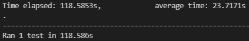
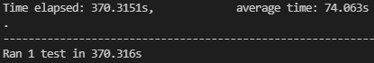
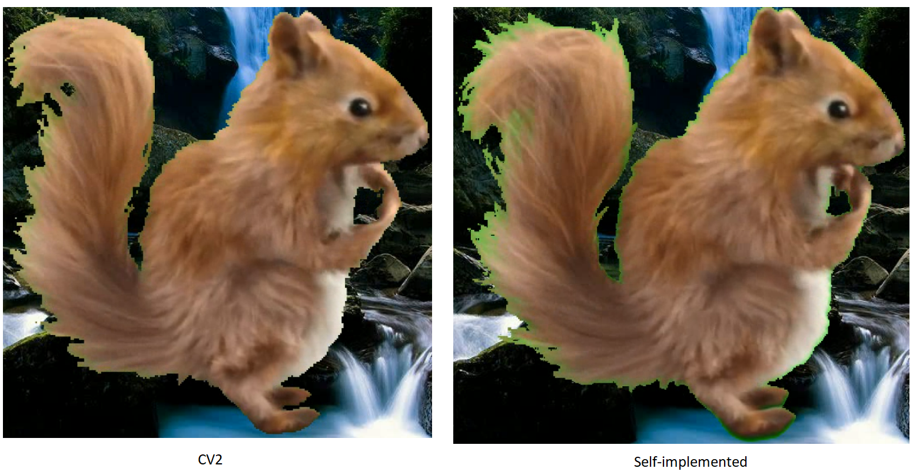
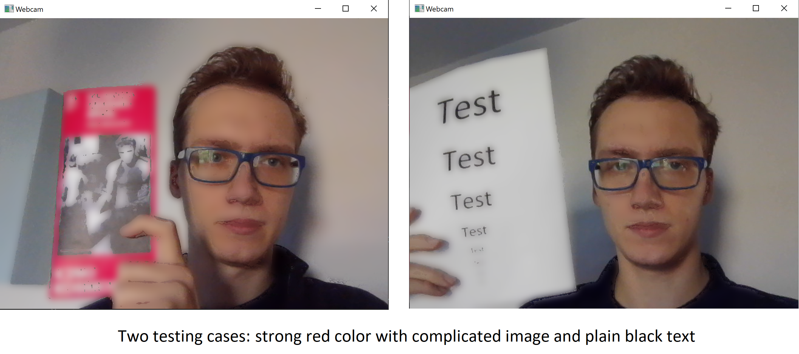
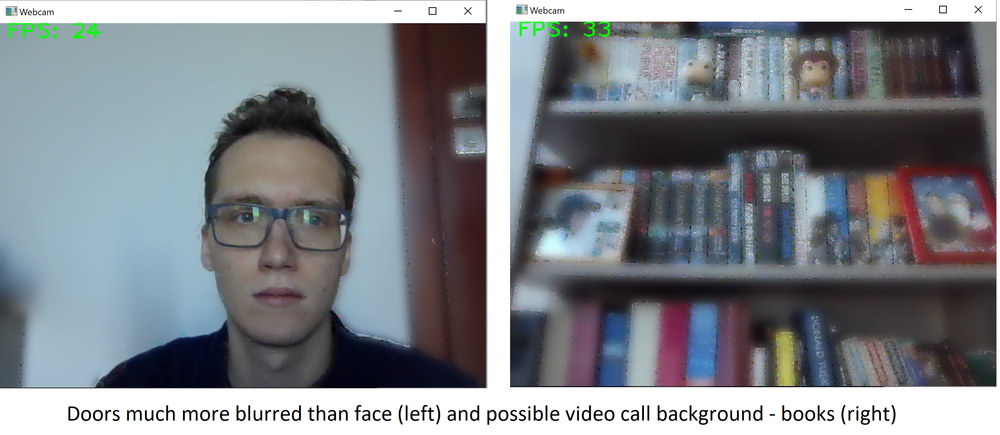
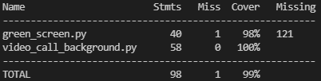

Green Screen Replacement Script¶
The idea behind this project is to develop a script, which will replace uniform green background of a video with an image and blur background as in video calls and compare it to predefined functions of OpenCV package
TODO:
✓ Replace green background with image
✓ Find a film sample of a green/blue screen video
✓ Import the frames of the video
✓ Find the pixels that are approximately green/blue
✓ Set the opacity of those pixel to zero
✓ Add a different background
✓ Blur constant-over-time background (like video calls)
✓ Real time computation
Green Background¶
Located in green_screen.py. To run pass two parameters:
Video with green background
Image to replace green pixels
and uncomment chosen function in main. Parameters should have the same dimensions, otherwise error will be thrown. Edited video is stored in output.mp4 file. To see how algorithm performs frame by frame uncomment block in replace_background_with_image function.
Testing¶
CV2-based function first represents colours in HSV model. Then it computes mask for both video frame and image. Unwanted green background is substracted and replaced with masked image. For 5 runs it takes:

Self implementation tries to compete with predefined functions. It makes cuts using numpy advanced indexing: green pixels are replaced right away with image pixels. Also colour model is not changed (BGR - Blue, Green, Red). For 5 runs it takes:

For a 30 fps video it takes around the length of video to replace background with self-implemented method. On the other hand CV2 method needs 1/3 of duration of the video to replace green pixels.
Even with optimized, vectorized code (iterated approach is around 100 times slower) CV2 predefined methods are much faster in replacing green screen. This is because CV2 uses Intel Integrated Performance Primitives, which is an aggresive optimization combined with exploitation of CPU algorithms like SSE - Streaming (Single Instruction Multiple Data) Extensions. SSE can i.e. assign multiple values parallelly.
Quality-wise it is also harder to define “green” in BGR colour model. Therefore self-implemented method performs slightly worse in terms of quality too:

Background Blur¶
Located in video_call_background.py. There are no parameters required. It shows real-time blurring of webcam video with chosen approach.
Testing¶
Writing tests for this problem does not make sense as the most important part is the quality of produced output. That is why the results will be compared visually.
CV2-based approach focuses on chosing colours in HSV color model, as there is no way to track constant-voer-time pixels in CV2 library:

As it uses colour values to mask out and blur some pixels, there always be some imperfections. Therefore my face is a little blurred too. But especially in the left picture leaflet is much more blurred than the face.
Self-implemented approach saves a frame and compares it with the new one at chosen frequency. At all the pixels, where the value stayed the same the blurring will be applied. This results in blurring constant-over-time pixels. The mask is adjusted to possibly best cover "constant" pixels:

Movement is here required to keep “face pixels” unblurred, but the quality of the blur is much better as there are some pixels where there is no movement at all and they stay properly blurred thoughout the usage.
Both approaches produce output with around 30 FPS. For comparability reasons self-implemented function also uses Gaussian blurring provided by CV2.
Unit Tests and Coverage¶
Both scripts are tested using unittest library. Coverage (without main functions):
